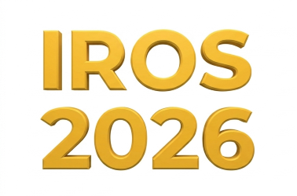
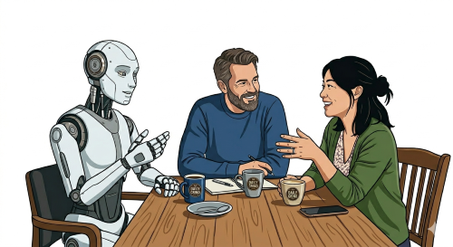

The 4th Workshop on Nonverbal Cues for Human-Robot Cooperative Intelligence


This workshop is dedicated to discussing computational methods for sensing and recognition of nonverbal cues and internal states in the wild to realize cooperative intelligence between humans and intelligent systems. We gather researchers from different expertise, yet having the common goal, motivation, and resolve to explore and tackle this delicate issue considering the practicality of industrial applications. We are calling for papers to discuss novel methods to realize human-robot cooperative intelligence by sensing and understanding humans’ behavior, internal states, and to generate empathetic interactions.
- Human internal state inference, e.g., cognitive, emotional, intention models.
- Recognition of nonverbal cues, e.g., gaze and attention, body language, para-language.
- Multi-modal sensing fusion for scene perception.
- Nonverbal behavior generation for robots/agents, e.g., gaze salience, gesture.
- Synchronization of nonverbal and verbal behavior
- Learning algorithms, e.g., cross-embodiment and cross-context learning, imitation learning.
- Generative and adversarial algorithms to enhance human-robot interaction, e.g., LLMs, diffusion models, VLMs.
- Empathetic interaction between humans and intelligent systems.
- Robust sensing of facial and body key points.
- Modeling of social dynamics, e.g., group harmony, engagement, and cohesion.
- Personalization and trust modeling based on multimodal nonverbal cues.
- Real-world applications of cooperative intelligence.
Keywords: "Human: Face, gaze, body, pose, gesture, movement, attention, cognitivestate, emotion state, intention, empathy, Environment: Object"
Secondary subject: "Human-Robot cooperative intelligence", "Nonverbal cues recognition from audiovisual", "Human internal state inference from multi-modality", "Vision applications and systems", "Human-Object interaction and scene understanding"
Sponsors

Organizers


| Mar 24th | Workshop webpage was launched. |
We invite authors to submit unpublished papers (2-4 pages excluding references) to our workshop, to be presented at a workshop session upon acceptance. Submissions will undergo a peer-review process by the workshop's program committee and accepted papers will be invited to present their works at the workshop (see presentation format).
- LaTex and MS Word template: https://www.ieee.org/conferences/publishing/templates.html
- Link to EasyChair submission system: https://easychair.org/conferences/?conf=iros2026nocworkshop
- Spotlight talks (5 mins talk, Q&A in the poster session)
- In-person A0 posters for in-depth discussions
- Short pre-recorded videos (about 2 minutes) to be uploaded on the workshop webpage
- Link to arXiv: https://info.arxiv.org/help/submit/index.html
We plan a half-day event for 4 hours, including talks by two invited speakers. For participants who could not attend in person, we will disseminate the papers and pre-recorded videos on our workshop page, which also consists of a comment section for Q&A.
- 08:30 08:32 Welcome (2mins)
- 08:32 09:02 Chung Hyuk Park, George Washington University(30 mins)
- 09:02 09:32 David Lindlbauer, Carnegie Mellon University(30 mins)
- 09:32 10:17 Flash talks: 9 papers (total 45mins, about 5mins each)
- 10:17 10:47 Coffee break and poster session (30mins)
- 10:47 10:57 IEEE RAS TAB x Startups: Hanson Robotics
- 10:57 11:27 Group activities: Identify individual and group states from nonverbal cues (30mins)
- 11:27 11:57 Review and synthesis of group activities (30mins)
- 11:57 12:27 Fethiye Irmak Doğan, University of Cambridge(30 mins)
- 12:27 12:30 Closing and awards ceremony (3mins)
We intend to have speakers from different ethnic backgrounds, countries, and career stages. Specifically, we confirmed the attendance of two speakers.

Invited Talk I
Learning Quantifiable Cues in Social Human–Robot Interaction and Neuro-Symbolic Learning for HRI
In this talk, I will discuss our efforts to identify and learn quantifiable, explainable cues from social interactions and behaviors. We believe this work has important implications for developing intelligent and beneficial human–robot interactions. I will also share our ongoing approaches to studying neurological signals in human–robot interaction and learning.
BiographyDr. Chung Hyuk Park is a Professor in the Department of Biomedical Engineering, School of Engineering and Applied Science at the George Washington University. As the director of the Assistive Robotics and Tele-Medicine (ART-Med) Lab, his current research interests are: 1) Multimodal human-robot interaction (HRI) and robotic assistance for individuals with disabilities or special needs, 2) Robotic learning and humanized intelligence, 3) Tele-medical robotic assistance and AI-based reasoning for medical perception and decision-making, 4) Trustworthiness in Embodied AI, and 5) Physical AI and Neuro-Sybolic Learning. He is a recipient of an NSF CAREER grant and carried out a National Robotics Initiative (NRI) NIH R01 project as the lead-PI. His work was introduced in diverse media and events such as Voice of America, Robot Trends, USA Today, Arirang TV, and TEDx Pearl Street. He received his PhD degree in Electrical and Computer Engineering from the Georgia Institute of Technology (2012) and MS degree in Electrical Engineering and Computer Science and BS degree in Electrical and Computer Engineering from Seoul National University (2002, 2000, respectively).
Invited Talk II
Building Adaptive Spatial Computing Systems
Spatial computing systems such as Extended Reality (XR) will transform the way we interact with digital information, and promise a rich set of applications, ranging from productivity and architecture to interaction with smart devices and robotics. Current approaches to spatial computing, however, are static, and users need to manually adjust factors such as what digital tools they need and when, every time they change task or environment. This is distracting and leads to information overload. To overcome these challenges, we aim to understand and predict how users perceive and interact with digital information, and use this information in context-aware systems that automatically adapt when, where and how to present virtual elements. In this talk, I will present computational and multimodal approaches that leverage contextual knowledge about users, the environment and system capabilities to create advanced interactive experiences that blend the digital and physical world.
BiographyDavid Lindlbauer is an Assistant Professor at the Human-Computer Interaction Institute at Carnegie Mellon University where he leads the Augmented Perception Lab and co-directs the CMU Extended Reality Technology Center. His research focuses on creating and studying enabling technologies and computational approaches for adaptive user interfaces including Extended Reality (XR), to increase the usability of advanced interactive systems, with applications in casual interaction, productivity, health and robotics. He received his PhD from TU Berlin, advised by Prof. Marc Alexa, and was a postdoctoral researcher at ETH Zurich. He has published more than 50 scientific papers at premier venues in Human-Computer Interaction such as ACM CHI and ACM UIST and was awarded the ETH Postdoctoral Fellowship in 2018. He was awarded the ETH Postdoctoral Fellowship in 2018 and NSF CAREER Awards in 2026. His work has attracted media attention in outlets such as MIT Technology Review, Fast Company Design, and Shiropen Japan.
Invited Talk III
Beyond Words: Towards Context-Aware and Adaptive Human–Robot Interaction
Effective human–robot interaction goes beyond understanding spoken natural language, particularly when robots need to adapt to individual users. People communicate their intentions, preferences, and expectations through a combination of verbal and nonverbal behaviour, while social and environmental context shapes how these signals should be interpreted and what responses are appropriate. The talk will present research on how robots can use these signals to better understand users, reason under uncertainty, and adapt their behaviour accordingly. Specifically, it will examine how ambiguity and conflicting cues can be handled, how human feedback and explanations can support adaptation, and how robots can generate socially appropriate behaviour for different people and situations. Finally, the talk will highlight open challenges in context-aware and adaptive human–robot interaction, including accounting for individual differences without amplifying bias and maintaining interpretable and robust robot decision-making.
BiographyFethiye Irmak Dogan is a Postdoctoral Research Associate in the Affective Intelligence and Robotics Laboratory (AFAR) at the University of Cambridge, UK. She received her PhD in Computer Science, with a specialisation in Robotics, Perception and Learning, from KTH Royal Institute of Technology, Sweden, in 2023. During her doctoral research, she was a visiting scholar at the Georgia Institute of Technology, USA, from November 2021 to April 2022. Her research focuses on developing autonomous and explainable robots for human environments, with an emphasis on human–robot interaction, machine learning, deep learning, and explainability. Her work has received several recognitions, including the KROS Interdisciplinary Research Award in Social HRI at IEEE RO-MAN 2025, the Seal of Excellence from the European Commission, and she was a finalist for the Early Career Contribution Award in the Outstanding Women in Robotics & Automation Paper Awards at IEEE ICRA 2025. She currently serves as an Associate Editor for IEEE Robotics and Automation Letters (RA-L).